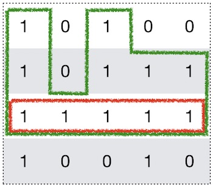

问题描述：
给定一个只包含0和1的二维数组，找到只包含1的最大矩形。
例子：
Input:
[
["1","0","1","0","0"],
["1","0","1","1","1"],
["1","1","1","1","1"],
["1","0","0","1","0"]
]
Output: 6
解法：
1. 动态规划：
这道题可以用动态规划的方法来解决。对于矩阵中的每个为1的点，以该点为起点向上连一条最长的只包含1的直线。求出包含该直线最大的矩形的面积。所有面积中最大的即为所求。以下图为例，红色点对应的面积即为绿色框所显示的区域。

为了实现上面的思路，我们只需要维护三个标记为left、right、hight的矩阵。面积即为hight * (right - left)。
[cur_left, cur_right) // 当前行包含该点最长的连续1区间
left(i, j) = max(left(i-1, j), cur_left)
right(i, j) = min(right(i-1, j), cur_right)
height(i, j) += 1, if matrix[i][j]==’1’;
height(i, j) = 0, if matrix[i][j]==’0’
以上面的例子为例，最终left、right、hight三个矩阵分别为：
# left
[0, 0, 2, 0, 0]
[0, 0, 2, 2, 2]
[0, 0, 2, 2, 2]
[0, 0, 0, 3, 0]
# right
[1, 5, 3, 5, 5]
[1, 5, 3, 5, 5]
[1, 5, 3, 5, 5]
[1, 5, 5, 4, 5]
# height
[1, 0, 1, 0, 0]
[2, 0, 2, 1, 1]
[3, 1, 3, 2, 2]
[4, 0, 0, 3, 0]
代码实现：
class Solution(object):
def maximalRectangle(self, matrix):
"""
:type matrix: List[List[str]]
:rtype: int
"""
if not matrix:
return 0
# DP
m, n = len(matrix), len(matrix[0])
left = [0] * n
right = [n] * n
hight = [0] * n
max_area = 0
for i in range(m):
# left
curr_left= 0
for j in range(n):
if matrix[i][j] == '1':
left[j] = max(curr_left, left[j])
else:
left[j] = 0
curr_left = j + 1
# right
curr_right = n
for j in range(n - 1, -1, -1):
if matrix[i][j] == '1':
right[j] = min(curr_right, right[j])
else:
right[j] = n
curr_right = j
# hight
for j in range(n):
if matrix[i][j] == '1':
hight[j] += 1
else:
hight[j] = 0
# area
for j in range(n):
curr_area = (right[j] - left[j]) * hight[j]
max_area = max(max_area, curr_area)
return max_area
2. 基于LeetCode 84题的O(n^2)解法
对于每一行构造出以当前行为底的柱状图，然后利用LeetCode 84题的解法，对每一行求解。最终求出最大的矩形。以下图为例，对于红色行，构造的柱形图即为绿色框所围起来的。

代码实现：
class Solution(object):
def maximalRectangle(self, matrix):
"""
:type matrix: List[List[str]]
:rtype: int
"""
if not matrix:
return 0
m, n = len(matrix), len(matrix[0])
height = [0] * (n + 1)
ans = 0
for i in range(m):
for j in range(n):
if matrix[i][j] == '1':
height[j] += 1
else:
height[j] = 0
# solution for LeetCode 84
stack = [-1]
for j in range(n + 1):
while height[j] < height[stack[-1]]:
h = height[stack.pop()]
w = j - stack[-1] - 1
ans = max(ans, w * h)
stack.append(j)
return ans